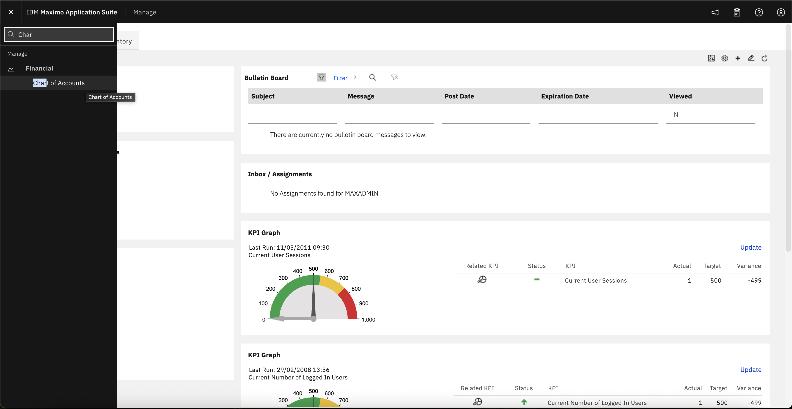
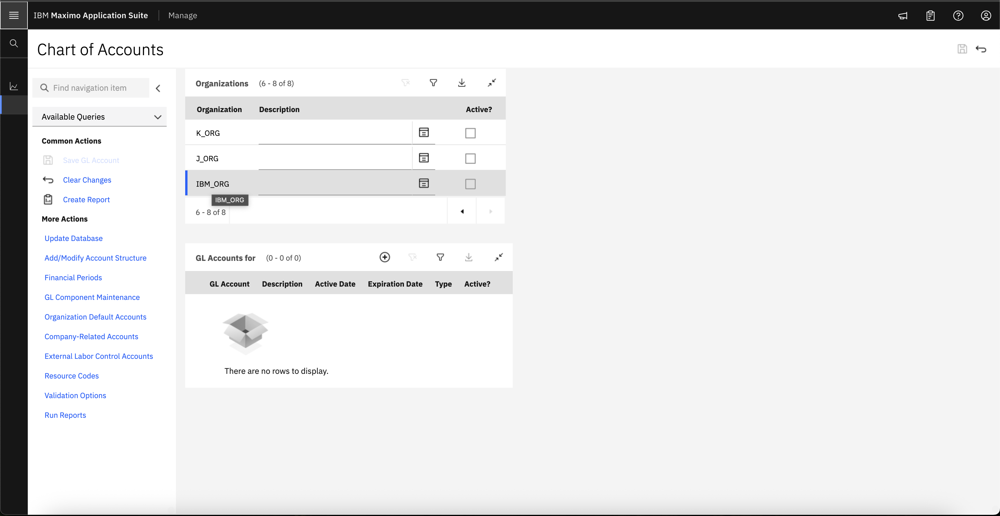
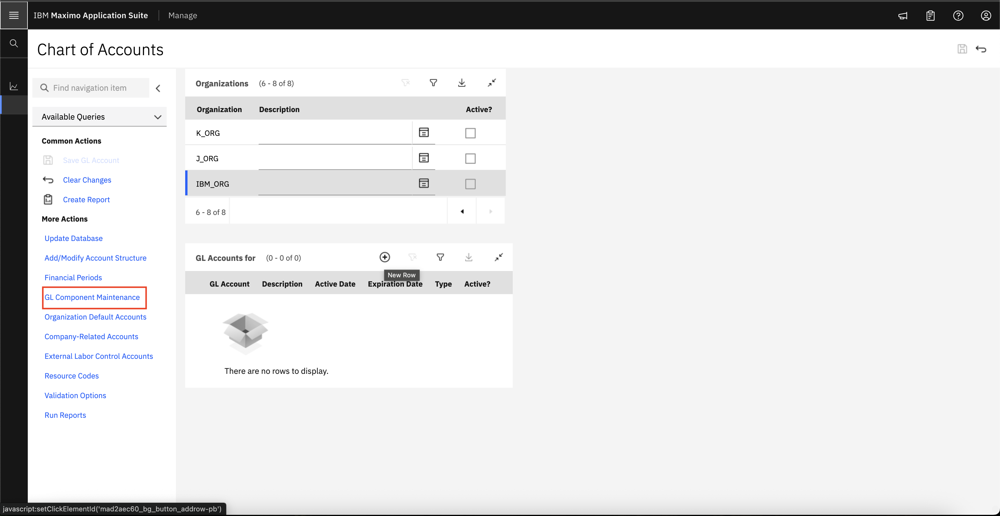
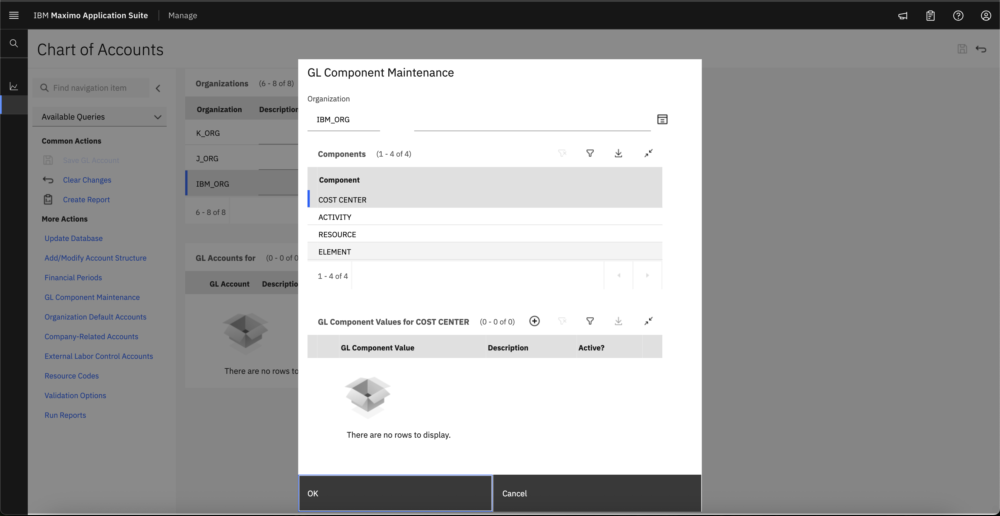
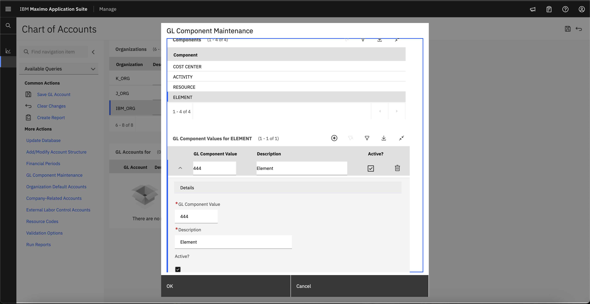
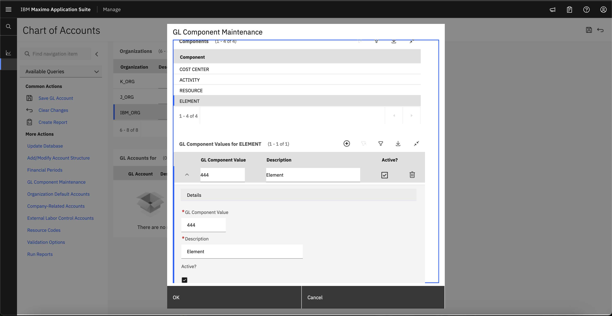

Objectives
In this Exercise you will learn how to:
- Activate Organization
Before you begin:
This Exercise requires that you have:
- completed the pre-requisites required for all labs
- completed the previous exercises
Info
To Activate organization, we must have financial details of our organization.
-
To Activate organization, we need to Create clearing account in the chart of accounts. So naviagte to Chart of Accounts from Financial Section. 
-
Please select the organization for which you want to add a GL account. 
-
Select GL Component Maintenance  
-
For each component(Cost Center, Activity, Resource, Element), create GL component Values using plus icon and save it.


 
 -
Expand GL Accounts for IBM_ORG

-
Select GL Account for Each Segment(Cost Center, Activity, Resource, Element)

-
Save GL Account Details.

-
Navigate back to Organizations and Select Clearing Account details.


-
Select the Active check box.

Congratulations you have successfully activated organization.